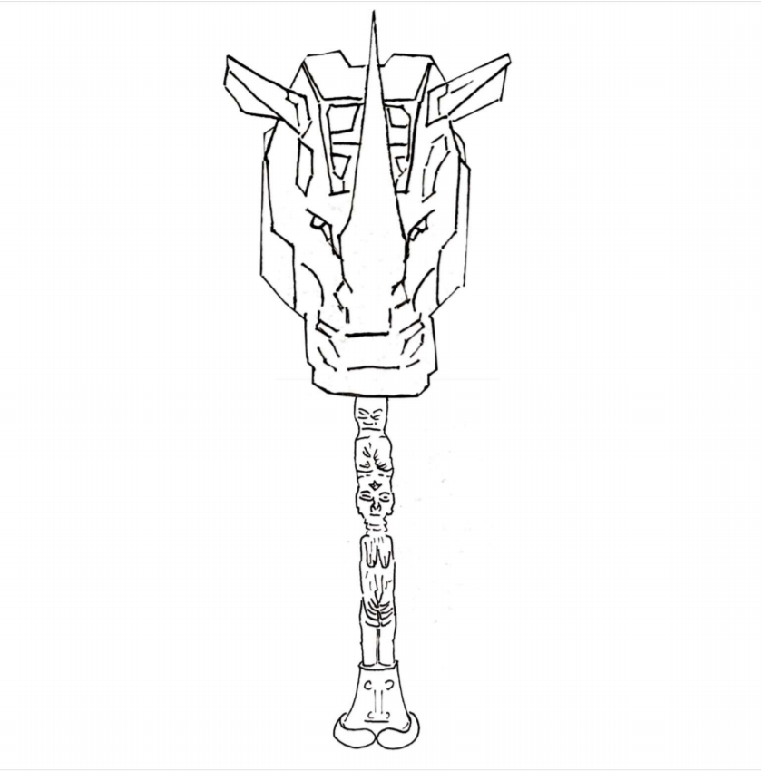
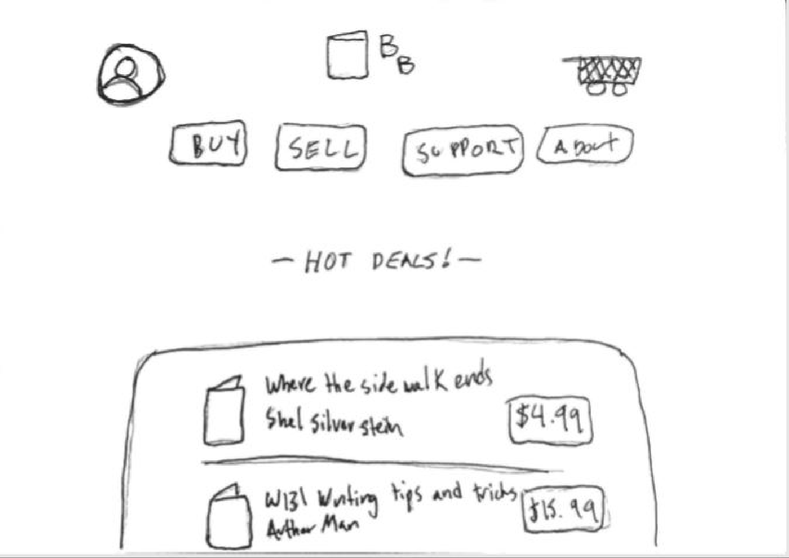
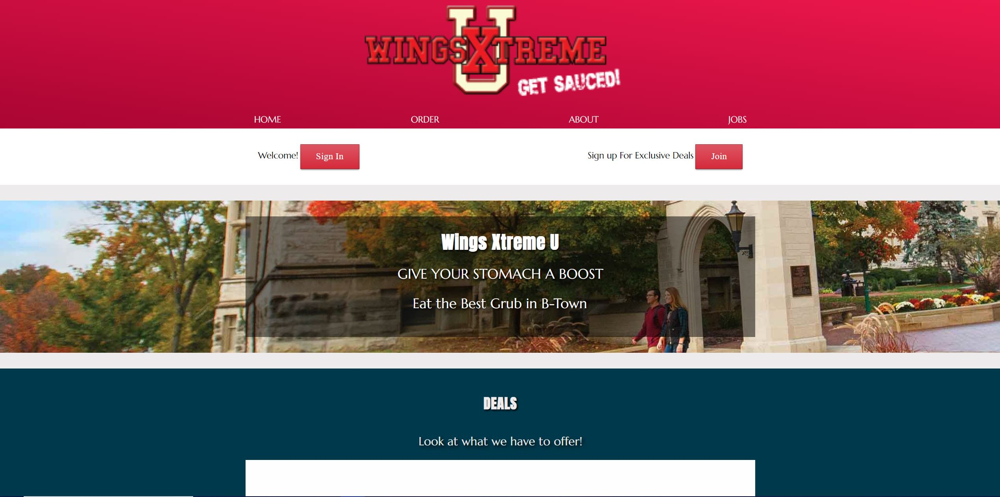
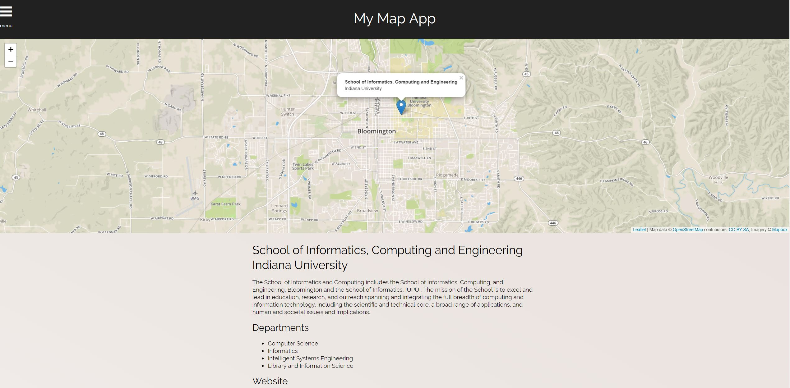
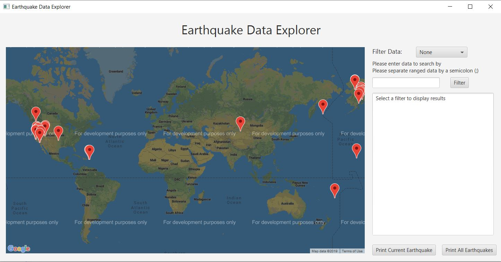

Inspiring UX Designer ● Senior at Indiana University
Hey there, my name is Jeffrey Tran and I am an inspiring UX Designer/Development coming from Indiana University. Currently, you are looking at my portfolio! I spend most of my time learning different design methods at school that will help me work on future projects. When I am not learning new skills to add to my toolbox, I am working on projects such as this portfolio. What I hope to do with this project is to demonstrate my knowledge in the UX Design field to you. Below you will find the different concepts that I have designed by myself or with a team.
UX Design Projects
Before I discovered the UX Design field, I was pursuing a bachelor’s degree in Computer Science. Although I enjoyed using my problem skills in my coding, there was something that did not feel right for me. I wasn’t able to collaborate with peers in person because most of our project were done on a computer. This all changed when I took a class in Human-Computer Interaction Design in the Spring of 2018 and decided to pursue this major. During this class, I learned all kinds of design strategies that allowed me to proceed in the various phases of a UX Design project and was able to practice these skills in the examples below: the African Rhino Hammer and Bargain Books. If you would like to see what kind of journey I had during these two projects, click on the specific image!
African Rhino Hammer
The weapon is an ancient "Rhino-Hammer" from W'Kabi's tribe that has been modified to allow the head to release and extend the length of the weapon. The weapon can also gather and charge kinetic energy by swinging it around and then transferring the stored potential energy in three ways: "Rhino Smash" - direct hit release, "Rhino Blast" - concentrated laser-shot release of energy through the horn of the hammer, and "Rhino Quake" - slamming the rhino horn into the ground releases energy into the surrounding environment.
Bargin Books
As a college/university student, paying for textbooks can be quite expensive. At the end of the semester, what do students do with textbooks they don't need anymore? Selling them back to the bookstore/book trucks may result poor profits from the original price. Bargain Books is a website that allows college/university students to interact with one another to cut down spending on textbooks. Students would be able to sell their old books through this median to others as well as finding the required text for their next class.
Web Design Projects
After learning a lot about UX Design, I felt like my visual design skills were still lacking. This year I decided to take a class on Web Design and there was a lot more to learn than I thought! Depending on the kinds of typography, color, and styling choices used, it tells the users what a website is all about. Every Web Design project I always had to ask myself questions such as “what kind of website do I want it to be”, “what kind of feeling am I trying to achieve”, "what should users see when the window gets smaller”, “what color choices do I have to make”, “what kind of language should I use for the intended audience”, and more. These projects are not functional. If you would like to see some examples of my web design projects, click on the specific image below!
Modular Design / Flexbox / RWD
Before learning how to make responsive websites, I never thought about what they should look like when the window gets smaller. For this project, I thought about what kind of mood I wanted to set and thought the site was inviting due to the colors and typography chosen. This project was a re-design of the Wings Xtreme website that allowed me to show off what I know about making responsive web designs.
Navigation / Plugins
This project was created to demonstrate what I can learn on the internet and use in my work. There is a wide variety of plugins to use that people have provided. By using the resources that are availiable to me, I am able to create websites that have user friendly functionality.
Java Projects
Although I did switch my major from Computer Science to UX Design, I continued on developing my skills as a programmer by learning a little bit about Java. I believe that learning more about coding will allow me to think more ways on how to solve a problem by translating my logic onto a piece of paper. Writing out my thoughts is a useful way for me to filter out the bad ideas and allow better ones to come in, otherwise I may be repeating an idea. This also allowed me to walk through my steps and check if I had made any logical errors in my thinking. If you want a better view of the GUI, click on the image and if you would like to check out how the program works, click HERE (2487 KB) to see the code!
Earthquake Data Explorer

×
The goal of this project was to read earthquake information from a CSV file to be able to pinpoint locations on the map of where they occured. My team and I found resources that helped us learn how to do so. From this application, you can find a specific earthquake or a ranged set. If you wanted to save the information on a file, there is functionality to do so!